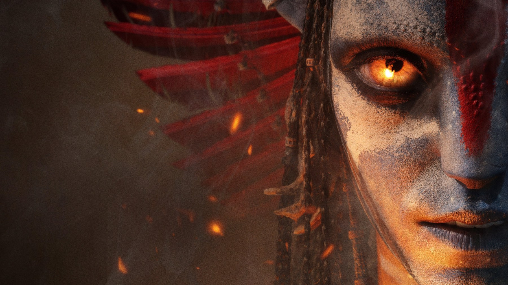
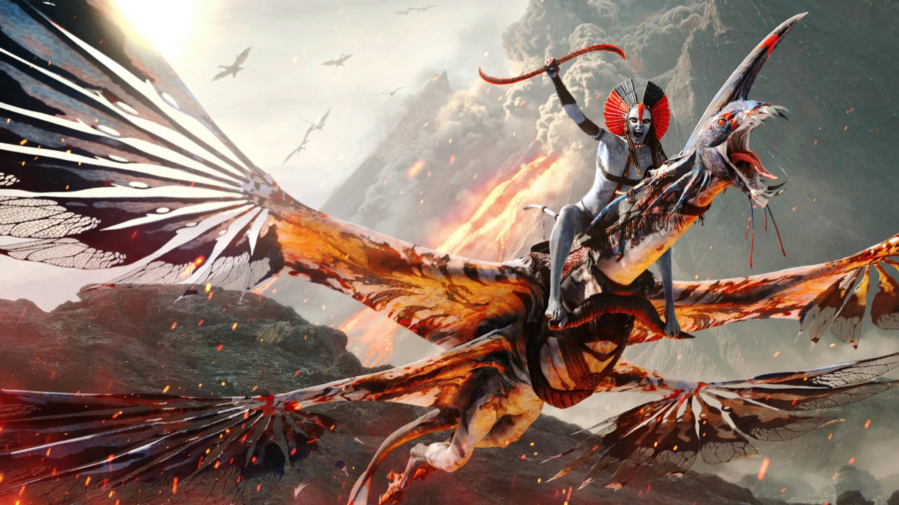

Avatar: Fire and Ash
Il terzo capitolo trova finalmente il cattivo giusto, poi lo mette al servizio di una battaglia che conosciamo già
«Questa è l'unica cosa pura in questo mondo»: Varang parla del fuoco, come riporta Paolo Nizza su Sky TG24, e subito dopo dice che è venuto dalla montagna e ha bruciato la foresta del suo popolo. In due frasi il terzo Avatar dà al suo cattivo una ragione che si capisce, e per tutta la prima parte è il film più cupo e più teso che Cameron abbia girato su Pandora. Poi però la storia si ricorda di essere un capitolo di serie e riporta tutti dove li aveva lasciati nel 2022, in mare, davanti a una flotta di cacciatori di tulkun.
La scena che vale il film
I Sully sono ancora in lutto per Neteyam, ospiti dei Metkayina, ma la maschera di Spider smette di funzionare nel sonno e Jake e Neytiri decidono di riportarlo dagli scienziati umani su navi mercantili volanti. Il convoglio non arriva mai, perché i Mangkwan guidati da Varang lo assalgono, saccheggiano le navi e le incendiano, mentre la famiglia si disperde. Nizza, a proposito dei mercanti del vento, parla di strutture che oscillano e di un pericolo «verticale»: è la descrizione più giusta dell'assalto, perché il fuoco arriva su un convoglio sospeso nel vuoto e non c'è nessun posto dove scappare.
Nel resto del film questa chiarezza si perde. Lo stesso Nizza osserva che il film sacrifica la contemplazione al ritmo dell'azione e lo giudica «incapace di fermarsi a respirare»; lui lo legge come parte del discorso, mentre noi lo vediamo come il prezzo di tre ore in cui ogni battaglia deve superare la precedente, quindi finisce per somigliare alla precedente.

Varang e Quaritch, la coppia che funziona
Oona Chaplin dà a Varang una presenza fisica che sopravvive alla performance capture: Cameron ha raccontato di aver cercato in lei furia e sessualità dentro una psicologia dominante, e lo schermo glielo restituisce nello sguardo prima ancora che nelle azioni. Zoe Saldaña risponde con una Neytiri più dura e, allo stesso tempo, più fragile del solito.
L'intuizione migliore del film è l'incontro tra Varang e Quaritch. Il colonnello di Stephen Lang mette in mano le armi da fuoco ai Mangkwan, li convince ad allearsi con l'RDA e inizia una relazione con la loro leader: la donna che chiama il fuoco «l'unica cosa pura» impara da lui a usare la polvere da sparo, ed è un contrasto che racconta più di una pagina di dialoghi. Eppure il film li usa quasi solo come moltiplicatore di fuoco nella battaglia finale, quando avrebbero potuto reggere una storia loro.
L'idea nuova, lasciata a metà
Il seme di un film diverso sta altrove. Spider collassa quando la maschera smette di funzionare e Kiri infonde il suo corpo di micelio, così che possa respirare l'aria di Pandora. Norm Spellman e Max Patel intuiscono che il processo potrebbe essere replicato per far respirare gli umani senza maschera, cioè una premessa che cambia la domanda della saga: da «come si resiste agli invasori» a «che cosa succede se qualcuno smette di essere un invasore». Il film la mette in tavola con coraggio, tuttavia la usa soprattutto come motivo per cui gli scienziati dell'RDA sottopongono Spider a test, e poi torna alla guerra.
Dove il film torna a casa
Il terzo atto è il punto debole, e lo diciamo con un esempio. Lo'ak cerca Payakan prima che una congregazione di tulkun finisca nel mirino dei cacciatori dell'RDA. Il biologo Ian Garvin prova a fermarli ma non viene ascoltato, mentre il consiglio dei tulkun deve decidere se abbandonare il proprio pacifismo: è lo schema della caccia del film precedente, con più navi e più morti. Chi ricorda la caccia del 2022, con l'arpione che parte e i cacciatori che gridano ordini, riconosce il ritmo prima ancora delle immagini.
Chiara Guida, su Cinefilos, nota che Cameron sceglie di scavare nei volti e nei silenzi, talvolta a discapito della storia, e giudica la trama frammentata e a tratti disordinata. Siamo d'accordo sul disordine, ma non sul resto: i silenzi più belli sono quelli del primo atto, che la lunghezza finisce per soffocare. The Arts Desk aggiunge un'osservazione che ci sembra giusta, perché gli animali di Pandora lasciano un segno più forte dei Na'vi, spesso difficili da distinguere uno dall'altro.

In italiano
Nell'edizione italiana, diretta da Marco Mete, Varang ha la voce di Chiara Gioncardi, Quaritch quella di Luca Biagini e Neytiri quella di Domitilla D'Amico. Lo segnaliamo perché il personaggio che regge il film si fa ricordare soprattutto per ciò che dice, e la battuta sul fuoco è quella che ci portiamo a casa.
I numeri, in un paragrafo
Il film dura 197 minuti ed è disponibile su Disney+ dal 24 giugno 2026. Su Rotten Tomatoes ha il 66% di recensioni positive e su Metacritic la media è 61, mentre il pubblico lo ha premiato con un CinemaScore A, come i due capitoli precedenti. Con circa 1,49 miliardi di dollari nel mondo a ottobre 2026, conteggio ancora aperto, è un successo enorme ma anche il risultato più basso dei tre Avatar, a fronte di un budget stimato tra 350 e 400 milioni. A marzo 2026 ha vinto l'Oscar per gli effetti visivi, dopo il BAFTA per gli effetti speciali. Il quarto capitolo è fissato al 21 dicembre 2029, il quinto al 19 dicembre 2031.
Per chi è
Lo consigliamo a chi ha amato La via dell'acqua e vuole un Cameron più scuro, perché ritrova la stessa meraviglia con una cattiva che resta in testa. Non lo consigliamo, invece, a chi ha già sofferto la durata del capitolo precedente: qui la durata è maggiore e la storia, nella seconda metà, offre meno sorprese, quindi la fatica si sente di più.
Varang è il miglior cattivo della saga e il film non le lascia lo spazio che merita: andateci per lei e per il primo atto, non per la storia.
Domande frequenti
Quanto dura Avatar: Fire and Ash?
197 minuti, cioè tre ore e diciassette minuti.
Dove vedere Avatar: Fire and Ash in streaming?
In abbonamento su Disney+, dove è arrivato il 24 giugno 2026, e a noleggio sulle principali piattaforme digitali.
Chi è Varang in Avatar: Fire and Ash?
È la leader del clan Mangkwan, il popolo della cenere, nemico dei Sully; la interpreta Oona Chaplin.
Fonti consultate (7)
- Wikipedia – Avatar: Fire and Ash
- Sky TG24 – Avatar: Fuoco e cenere, la recensione (Paolo Nizza)
- Cinefilos – Avatar: Fuoco e Cenere, recensione (Chiara Guida)
- Wikipedia – Avatar - Fuoco e cenere (doppiaggio italiano)
- The Arts Desk – Avatar: Fire and Ash review
- Wikipedia – 98th Academy Awards
- JustWatch / TMDB – dove vederlo in Italia